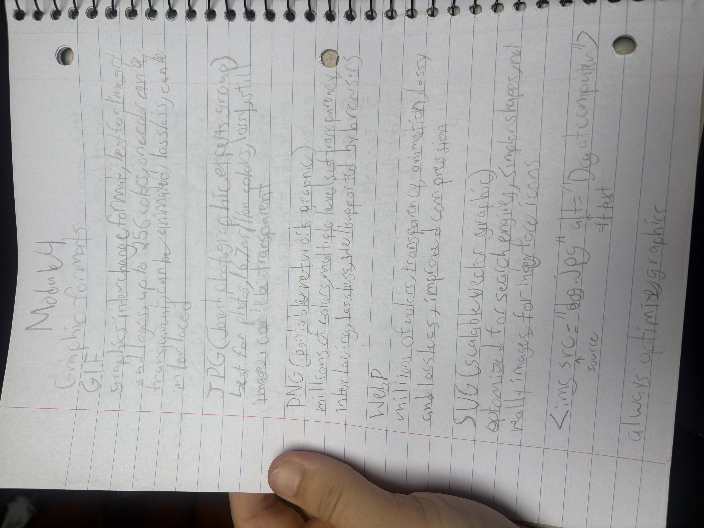

My JPG

What is this JPG?
This JPG is a picture of my notes for module 4. It contains notes about different types of image formats.
What is a JPG?
JPG is short for Joint Photographic Experts Group. It is a lossy format that deletes some date to reduce file size. It supports 16 million colors and is most useful for photographs.
Why Did I Choose This Image?
Since we have been using the JPG format for all of our notes in class, I figured it would be a fun idea to incorporate it into the lab for this module. I also wanted to pick an image that I took to show off the benefits of using JPG for photographs.
Source:
My own image!